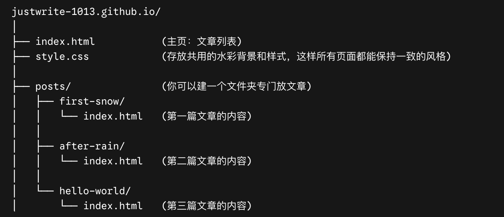

测试。第一次搭建博客，网页设计+代码由 Gemini 3.1 Pro 写出，Prompt 以及博客搭建步骤如下。
参考文献：搭建个人博客系列--(2) 动手搭建自己的第一个博客站点 https://zhuanlan.zhihu.com/p/1918804368607675274
步骤：
1. 创建 github repository，起一个好看网址名。
2. 利用 Gemini 3.1 Pro Canvas 设计网站，Prompt: 我想要用 github pages 做一个个人博客，我已经创建了一个 repository，我希望博客的设计风格是这样的：（按自己喜欢的设计风格形容填写），所有页面保持一样的风格。要有一个主页可以预览日期历程，内容开头，点击阅读全文时可以进到另一页，而不是在同一页阅览。以及，我希望能在github 里把每个文章分在不同的文件夹里，方便书写。请帮我把他们全都分开好，并连着file的创建步骤，一起打包给我。
3. Gemini 推荐结构：

O<" class="w-full rounded-xl shadow-sm opacity-95 my-8 hover:opacity-100 transition-opacity duration-300"> 4. 创建样式文件：在仓库主页，点击绿色的 Add file 按钮，选择 Create new file。在文件名的输入框中输入：style.css，将 Gemini 写的代码粘贴到编辑区域，点击 Commit changes... 保存。5. 创建主页：回到仓库，Add file -> Create new file，文件名：index.html，将 Gemini 写的代码粘贴到编辑区域，点击 Commit changes... 保存。
6. 创建文章详情页：回到仓库主页，点击 Add file -> Create new file。在文件名的输入框中，依次输入：posts/，然后输入hello-world/，最后输入 index.html（GitHub 会自动将路径折叠为文件夹结构）。最终顶部显示的文件路径应为：posts/hello-world/index.html。将 Gemini 写的代码粘贴到编辑区域，点击 Commit changes... 保存。
完成这三步后，等待几分钟让 GitHub Pages 重新部署，你的博客就能通过 https://(网站名).github.io 正常访问，并且点击“阅读全文”会平滑跳转到独立页面。以后写新文章，只需要重复第6步（更改文件夹名和内容），并在第5步的主页里添加一个指向新文章的卡片即可。